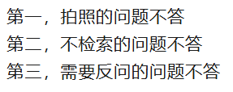
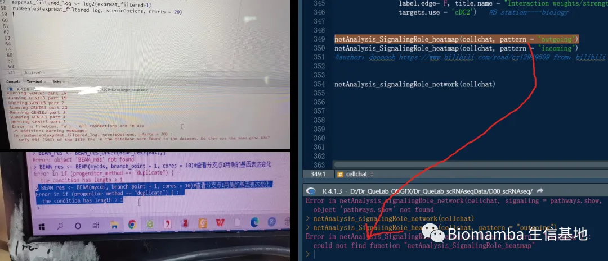

生信答疑，我有三不答
原文：https://mp.weixin.qq.com/s?__biz=MzAwMzIzOTk5OQ==&mid=2247532008&idx=1&sn=5ea5ceae42a9d3b4c77903d18c1f3f03&chksm=9b3c04b8ac4b8dae9d092079a063b25b528cce6222c4a1e0a340fff0d7553ab3eef17b288130#rd 合集：漫谈胡侃
一、写在前面
开个玩笑，虽然我们的交流群矩阵是免费的，不过大家的问题我们还是会尽量去回复。下图的三不答，是希望大家能够掌握提问技巧，这样才能快速的收获自己解决问题的答案，方便你我他。如果你真想要保姆式的贴心服务，也不妨看看：承包你的单细胞/空转硕博生涯

二、三不答，你也未必想答
通过一些实例，其实大家就能明白如何正确的提问。
1、为何拍照的不答？
例如，生信分析的界面本来可读性就很差，尤其是终端，黑色的背景配上密密麻麻的代码，很难让人看到的清楚。拍照的清晰度与色彩饱和度都很差，屏幕还会反光。这样造成他人很难从中提取到有效信息 ，正确的做法应该是截图 。大家可以看看下面两侧的图，如果是你，你更愿意回答谁的问题呢？

2、为何未经检索的不答？
未经检索的问题不答，这也很好理解，即使在没有实时对话大模型的年代，搜索引擎也能够为你解决99%的问题。 某PT、某包、某Seek横行的年代，你可以向AI提出你的需求，它能够在几秒内就为你返回一个完备的解决方案，它1000000000%懂得比Biomamba多的多的多的多。在提问前先与AI交流一波，即使未能解决问题，相信你也会在这个过程整理好所遇到问题的关键信息，以便于你更系统地提问。例如下面这个同学，就是一个很好的例子，记住，先检索，再提问题/需求~
甚至我们还遇到江湖救急，结果发现根本还没遇到问题和报错
3、为何需要反问的不答？
在实际的提问过程中，经常遇到同学问出一些需要人反问的问题：“XX函数报错了，要怎么解决？”。干问，既没有截图，也没有数据、代码来源、上下文内容背景展示。这种情况显然大家也爱莫能助 ，各位需要把自己遇到的问题完整呈现出来 ，他人才能够根据你提供的信息 为你列出解决方案。上面给报错截图就是一个展现问题的方式，大家需要把自己遇到的问题背景 、报错命令 、运行环境 、版本信息 、数据结构(不要担心自己的数据隐私，各位自己的数据想要发表尚需费九牛二虎之力，显然其他人并不会有盗用数据的欲望)、分析目的 等完完全全的展示出来，才能为大家帮助你提供可能。
三、乐于提问
经常有人会选择私发我问题，而不是在交流群中提问，原因是害怕自己提的问题过于简单受到大家嘲笑。各位大可不必这么想，在你遵守了以上的几个原则的前提下，有问题尽管在群里提出来 ，无论难易，我和群里的其他成员都很乐于帮助他人 ，毕竟帮助别人解决报错也是巩固 自己知识 的好方法。

如何联系我们

 留一个领取资料、开箱即用的单细胞分析镜像的微信号[Biomamba_zhushou]，方便各位随时交流。同时我们也构建了交流群矩阵，欢迎大家入群讨论。
大家可以阅读完这几篇之后添加给生信入门初学者的小贴士
没有检索，就没有发言权
留一个领取资料、开箱即用的单细胞分析镜像的微信号[Biomamba_zhushou]，方便各位随时交流。同时我们也构建了交流群矩阵，欢迎大家入群讨论。
大家可以阅读完这几篇之后添加给生信入门初学者的小贴士
没有检索，就没有发言权
已有生信基地联系方式的同学无需重复添加

 您点的每个赞和在看，我都认真当成了喜欢
您点的每个赞和在看，我都认真当成了喜欢